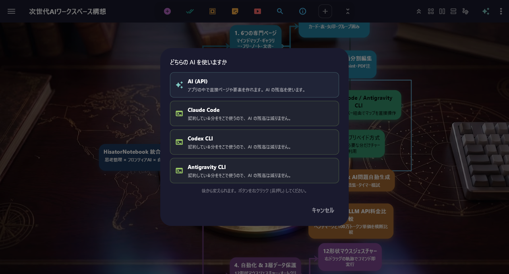

AI 機能 ＆ 4大 CLI 統合
— ChatGPT・Gemini・Claude を「Jev」が自動選択。API キー不要のプリペイドと 4 大 AI CLI 統合
— 01 / Auto Generate & Jev Routing
トピックから、マップが立ち上がる
AI 選びは「Jev」におまかせ
テーマを入力するだけで AI が説明文と子ノードを自動展開。自動選択モード 「Jev」 が質問に合わせて ChatGPT・Gemini・Claude から最適なモデルをルーティングします。
- Jev (自動 AI 選択): 迷わず常に最適な最新モデルで応答
- Web 検索 ＆ 出典 URL 付き: 最新情報も根拠付きで回答
- Free プランから利用可: API キー不要、チャージした分だけすぐ使える
— 02 / 4 AI CLIs & Built-in MCP Server
Claude Code・Codex・Gemini・
Antigravity CLI をアプリ内に統合
Windows 版ではご自身の契約で 4大 AI CLI を直接起動可能。内蔵 MCP サーバーにより開いているマップや PDF を直接操作できます。
- 使用率バー表示: 5時間枠・週間枠の残りクォータをリアルタイム表示
- MCP サーバー内蔵: ワンクリックで外部 AI と接続（Ctrl+Z 巻き戻し対応）

30 LANGUAGES
30 言語一括翻訳 ＆ 要約
ツリー構造を保ったまま30言語へ一括翻訳。長文メモの要約にも対応。
FLASHCARDS & QUIZ
暗記カード ＆ 4択クイズ
マップやPDFから自動生成。「まとめて採点」とAI「会話学習」に対応。
AI EXAM PREP
AI「試験対策」＆ 会話練習
資格名や科目から重要用語・演習問題を自動生成。面接の音声練習も。
— 04 / File summarization · Max プラン専用
長文 PDF・Office 資料から、
1分でマップが立ち上がる
PDF（スキャン画像PDFも対応）・Word・Excel・PowerPoint を添付すると、AI が全体を読み込んでマインドマップを自動生成します。
— 05 / Prepaid credit & Cost Transparency
API キーの用意は不要
使った分だけの明朗プリペイド
$10 単位のチャージから使った分（API実費 + 30%）だけ消費。使わない月の AI 料金は ¥0 です。
PREPAID CREDIT SYSTEM
3大フロンティア AI をワンタップ切替
ChatGPT
Gemini
Claude